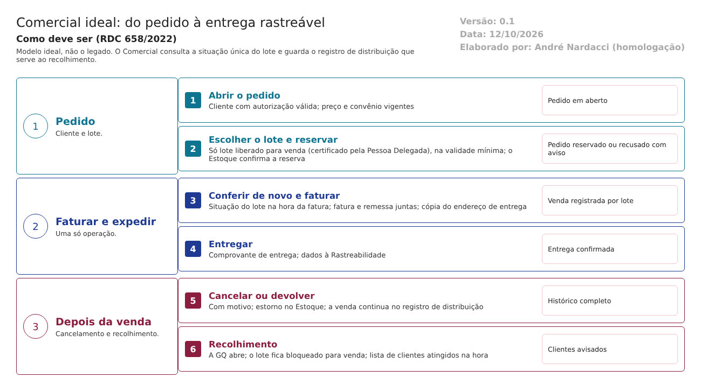

O ideal. Como o Comercial deve trabalhar para atender à RDC 658/2022 e ao Guia 33/2020. Este documento não descreve o legado. Usa o que foi levantado no código só para mostrar o que manter, o que corrigir e o que construir. Complementa modelo-ideal/01-qualidade-entre-modulos.md, que define as travas entre os módulos. Versão 0.1, de 12/10/2026, para validação com o Comercial e a Garantia da Qualidade.
1. O papel do Comercial no ERP
O Comercial entrega o lote certo ao cliente certo e guarda a prova disso. É o último ponto em que um lote com problema pode ser barrado e o primeiro de onde se parte num recolhimento (RDC 658/2022, art. 8º, XV, e arts. 345 a 347).
No modelo ideal, o Comercial não decide se um lote pode ser vendido. Ele consulta a situação única do lote, que só fica "liberado para venda" depois da certificação da Pessoa Delegada. Se a situação muda (bloqueio, desvio, recolhimento), a venda para no ponto em que estiver.
| O Comercial faz | O Comercial não faz |
|---|---|
| Cadastra o cliente com a autorização para receber medicamentos | Liberar o lote para venda (é da Pessoa Delegada, trava 4) |
| Vende só lote liberado para venda e com a validade mínima do cliente | Mexer no saldo (é do Estoque) |
| Guarda, em cada venda, o lote, a quantidade, o cliente e o endereço da data da venda | Abrir ou encerrar recolhimento (é da GQ, trava 11) |
| Responde a qualquer momento "para quem foi o lote X" | Apagar ou alterar uma venda já entregue |
| Avisa e trava quando o Estoque não confirma a reserva ou a saída | Seguir em frente quando uma integração falha |
2. Como o trabalho anda

O pedido passa por estas situações, nesta ordem, e cada mudança fica no histórico:
| Situação do pedido | Quem leva a ela | O que o sistema confere |
|---|---|---|
| Em aberto | Vendedor | Cliente com autorização válida; preço e convênio vigentes |
| Reservado | Sistema, com a confirmação do Estoque | Cada item com lote liberado para venda, na validade mínima, com saldo; se o Estoque recusar, o pedido não avança e a mensagem aparece |
| Separado | Estoque | — |
| Faturado e expedido | Faturamento | Situação do lote conferida de novo; fatura e remessa na mesma operação; cópia do endereço de entrega |
| Entregue | Sistema, pelo comprovante | — |
| Cancelado ou devolvido | Faturamento, com motivo | Estorno da reserva ou da remessa no Estoque; a venda continua no registro de distribuição |
3. As funções do Comercial ideal
Ação: Manter = o legado já faz como deve; Corrigir = existe, mas não atende; Construir = não existe.
| # | Função | Referência | Ação | Como deve funcionar | No legado hoje |
|---|---|---|---|---|---|
| 1 | Venda só de lote certificado pela Pessoa Delegada | Art. 8º, XV | Construir | A lista de lotes só mostra os "liberados para venda" pela situação única do lote, que depende da certificação registrada | Mostra o lote "disponível" no Estoque (aprovado pelo CQ) |
| 2 | Situação do lote conferida até a saída | Art. 157 | Corrigir | A reserva, a fatura e a remessa conferem a situação do lote. Bloqueio, desvio ou recolhimento param a venda e avisam | Conferido só na lista da requisição |
| 3 | Registros de distribuição prontamente disponíveis | Art. 346 | Construir | Consulta por lote, a qualquer momento, sem período obrigatório, no menu, acessível à GQ | RV07 fora do menu e só por período |
| 4 | Registros com informação suficiente sobre os clientes | Art. 347 | Corrigir | Cada venda guarda cliente, endereço de entrega copiado, lote, quantidade, data e remessa. Cancelamento não apaga a venda do registro | Endereço sem cópia; fatura cancelada some do relatório |
| 5 | Recolhimento a qualquer momento | Art. 345 | Construir | Um recolhimento aberto na GQ bloqueia o lote para venda e gera a lista de clientes atingidos, com os contatos | Não existe |
| 6 | Reclamação ligada à venda | Arts. 328 e 344 | Construir | A reclamação na GQ identifica a venda e o lote; o Comercial mostra as reclamações do cliente | Não existe |
| 7 | Registro no momento da ação | Art. 124 | Corrigir | Datas e horas do servidor em todas as decisões, inclusive finalizar | Finalizar sem quem nem quando; relacionamento com datas digitadas |
| 8 | Histórico de alterações | Art. 125 | Construir | Valor anterior, novo, quem, quando e motivo em cliente, endereço, preço, convênio e tipo de fornecimento | O serviço existe e não é chamado |
| 9 | Integrações confiáveis | Guia 33, 9.3.2.3 | Corrigir | Reserva, fatura e remessa confirmadas pelos dois lados; falha avisa e não deixa a operação pela metade | Reserva que falha vira -1; remessa que falha é ignorada |
4. Integrações com os outros módulos
Todas as integrações seguem o requisito 16 do documento 01: quando falham, avisam e não deixam a operação pela metade.
| Com | O Comercial recebe | O Comercial envia | Quando | Trava |
|---|---|---|---|---|
| Estoque | Lotes liberados para venda e saldo; confirmação da reserva, da separação e da remessa | Reserva, remessa e estornos | A cada pedido, fatura e cancelamento | 1 |
| Garantia da Qualidade | Certificação do lote (pela situação única); recolhimentos e bloqueios; reclamações | Lista de clientes por lote, para o recolhimento | Na venda; ao abrir um recolhimento | 3, 4, 11 |
| Rastreabilidade | Confirmação de entrega | Dados da venda e da remessa por lote | Na expedição | — |
| Principal | Pessoa jurídica, usuários, funções e assinatura eletrônica | — | Em cada gravação | — |
5. Quem faz o quê no Comercial
| Função | Pode | Não pode |
|---|---|---|
| Cadastro de clientes | Cadastrar e atualizar o cliente e a autorização dele | Vender para cliente com autorização vencida |
| Vendedor | Cotar e abrir pedidos | Escolher lote não liberado; faturar |
| Faturamento | Faturar, expedir e cancelar com motivo | Apagar uma venda do registro de distribuição |
| Garantia da Qualidade | Consultar as vendas por lote; acompanhar o recolhimento | Alterar uma venda |
A função é conferida no servidor, em toda gravação, e não só na tela (documento 01, requisito 15).
6. O que manter do legado
O que o código mostra que já funciona como deve e vale a pena levar para a nova versão (a confirmar nos testes):
- A escolha do lote na requisição, com o lote guardado no item da venda.
- A lista de lotes que exclui quarentena, bloqueio, reanálise e vencimento, acrescentando a certificação.
- A reserva no Estoque a partir do pedido e a fatura só depois da separação.
- A remessa gerada pela fatura, com cópia do endereço no Estoque.
- O relatório por lote (RV07), levado ao menu e corrigido.
- A exclusão lógica e o registro de quem criou e alterou.
7. Pontos para validar com o Comercial e a GQ
- Onde e por quem a certificação do lote é feita hoje.
- Como seria um recolhimento hoje: quem consulta, em que sistema e em quanto tempo.
- Quais documentos dos clientes a empresa exige (licença sanitária, autorização de funcionamento, responsável técnico) e com que validade.
- Validade mínima exigida por tipo de cliente.
- Como se comprova a entrega ao cliente.
O que a ANVISA pede: textos citados
Texto literal das normas citadas em cada tema, extraído dos arquivos da pasta Documentação/ (RDC nº 658/2022 em português e Guia nº 33/2020) por homologacao/ferramentas/citar_normas_diagnostico.py. "(...)" marca trechos omitidos. No portal, clique na referência de cada tema para ver o texto.
Tema 1 · Venda só de lote certificado pela Pessoa Delegada
RDC 658/2022, art. 8º
Art. 8º Um Sistema da Qualidade Farmacêutica adequado à fabricação de medicamentos deve garantir que:
(...)
XV - os medicamentos não sejam comercializados ou distribuídos antes da Pessoa Delegada pelo Sistema de Gestão da Qualidade Farmacêutica ter certificado que cada lote do produto foi produzido e controlado de acordo com os requerimentos de registro e quaisquer outras normas relevantes à produção, ao controle e à liberação de medicamentos;
(...)
Tema 2 · Situação do lote conferida até a saída
RDC 658/2022, art. 157
Art. 157. Os materiais recebidos e os produtos acabados devem ser fisicamente ou administrativamente colocados em quarentena imediatamente após o recebimento ou processamento, até que sejam liberados para uso ou distribuição.
Tema 3 · Registros de distribuição prontamente disponíveis
RDC 658/2022, art. 346
Art. 346. Os registros de distribuição de lote/produto devem estar prontamente disponíveis para as pessoas responsáveis pelo recolhimento.
Tema 4 · Registros com informação suficiente sobre os clientes
RDC 658/2022, art. 347
Art. 347. Os registros de distribuição devem conter informações suficientes sobre atacadistas e clientes diretamente abastecidos, mesmo quando se trate de produtos exportados e amostras médicas.
Tema 5 · Recolhimento a qualquer momento
RDC 658/2022, art. 345
Art. 345. Deve haver a capacidade de realização das operações de recolhimento a qualquer momento.
Parágrafo único. Em certos casos, pode ser necessário iniciar as operações de recolhimento, visando proteger os pacientes, antes da determinação das causas raízes e compreensão da extensão do desvio.
Tema 6 · Reclamação ligada à venda
RDC 658/2022, art. 328
Art. 328. Todas as reclamações devem ser documentadas e avaliadas visando a identificação se representam um possível desvio de qualidade ou outro problema.
RDC 658/2022, art. 344
Art. 344. Após um produto ter sido distribuído ao mercado, qualquer retirada da rede de distribuição em decorrência de desvio de qualidade deve ser considerada e gerenciada como um recolhimento.
Parágrafo único. O recolhimento não se aplica à recuperação ou devolução de amostras do produto da rede de distribuição para facilitar uma investigação sobre um problema ou desvio de qualidade.
Tema 7 · Registro no momento da ação
RDC 658/2022, art. 124
Art. 124. Os registros devem ser realizados ou completados sempre que uma ação for realizada e de modo a permitir que todas as atividades significativas relativas à fabricação de medicamentos sejam rastreáveis.
Tema 8 · Histórico de alterações
RDC 658/2022, art. 125
Art. 125. Toda a alteração feita no registro de um documento deve ser assinada e datada, devendo permitir a leitura da informação original.
Parágrafo único. Quando apropriado, o motivo da alteração deve ser registrado.
Tema 9 · Integrações confiáveis
Guia nº 33/2020, item 9.3.2.3 (Requisitos Operacionais)
Dados – requisitos relacionados ao manuseio de dados, considerando-se o seu impacto na segurança do paciente, na qualidade do produto e na integridade dos dados, abrangendo os seguintes pontos: - Definição dos registros eletrônicos; - Definição dos tipos de dados, incluindo a identificação das características, formatação, parâmetros críticos, intervalo e formato de datas válidos, limites e exatidão e assim por diante; - Onde e como os dados serão gravados (ex.: bancos de dados relacionais, arquivos criptografados etc.) - Campos necessários; - Migração de dados (importação e exportação); - Entrada de dados e subsequente edição; - Backup e recuperação; - Requisitos para arquivamento; - Segurança dos dados e integridade.
Interfaces – devem ser definidas (se aplicável), abrangendo os seguintes pontos: - Interface(s) com o usuário – definidas em termos de níveis de acesso (operador, administrador, gerente do sistema) ou funções quando apropriado; - Interface(s) com outros sistemas; - Interface(s) com equipamentos, tais como sensores ou atuadores. Isto pode incluir listas de I/O (entrada e saída) para sistemas utilizados para controle de processos; - Forma de entrada e saída de dados pelos usuários (ex.: teclado, leitor de código de barras, impressoras etc.).